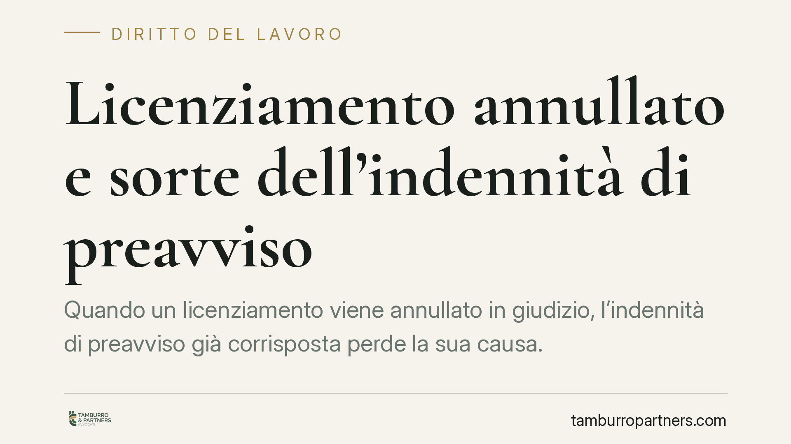

Licenziamento annullato e sorte dell'indennità di preavviso
Quando un licenziamento viene annullato in giudizio, l'indennità di preavviso già corrisposta perde la sua causa. Il datore può recuperarla? La questione tocca la distinzione tra compensazione in senso tecnico e venir meno del titolo, con effetti pratici diversi per azienda e lavoratore a seconda della data di assunzione.

Il caso e il nodo giuridico
Un dipendente viene licenziato con corresponsione dell'indennità sostitutiva del preavviso. Il giudice, però, annulla il licenziamento e ordina la reintegrazione. A quel punto il rapporto di lavoro si considera mai interrotto: la relazione contrattuale prosegue senza soluzione di continuità.
Qui emerge il problema. L'indennità sostitutiva del preavviso ha una funzione precisa: compensare il lavoratore per la cessazione immediata del rapporto, senza il periodo di preavviso lavorato. Ma se il licenziamento è annullato e il rapporto non è mai cessato, quella somma resta priva di giustificazione causale.
Inquadramento normativo
È importante non confondere due istituti distinti.
La compensazione in senso proprio (artt. 1241 e seguenti del Codice civile) presuppone due debiti reciproci, autonomi e contrapposti, che si estinguono per le quantità corrispondenti. Non è questo il caso: qui non ci sono due crediti che si elidono.
Ciò che accade è diverso ed è il venir meno del titolo. L'annullamento del licenziamento fa cadere il presupposto che giustificava il pagamento dell'indennità. La somma versata diventa quindi un pagamento privo di causa, ossia un indebito oggettivo ai sensi dell'art. 2033 del Codice civile: chi ha eseguito un pagamento non dovuto ha diritto di ripeterlo, cioè di ottenerne la restituzione.
Su questa base civilistica generale poggia la ripetibilità dell'indennità di preavviso: non serve invocare un meccanismo di compensazione, perché il fondamento è la restituzione di quanto pagato senza titolo.
Va poi tenuta distinta la questione dell'aliunde perceptum e dell'aliunde percipiendum (quanto il lavoratore ha guadagnato, o avrebbe potuto guadagnare con l'ordinaria diligenza, nel periodo tra licenziamento e reintegra). Questi importi incidono sul calcolo del risarcimento del danno, ma operano su un piano diverso rispetto alla sorte dell'indennità di preavviso.
I regimi applicabili
La tutela contro il licenziamento illegittimo dipende dalla data di assunzione.
Per i lavoratori assunti fino al 6 marzo 2015 si applica l'art. 18 della Legge n. 300/1970 (Statuto dei Lavoratori), nel testo modificato dalla Legge n. 92/2012, con le sue diverse graduazioni di tutela (reintegratoria piena, reintegratoria attenuata, indennitaria).
Per chi è stato assunto dal 7 marzo 2015 vale invece il D.Lgs. n. 23/2015 (cosiddetto contratto a tutele crescenti), che ha ridisegnato le conseguenze del licenziamento illegittimo.
La distinzione conta perché il tipo di tutela riconosciuta (reintegra o sola indennità) influenza la ricostruzione del rapporto e, di riflesso, la sorte delle somme già erogate.
Nota di verifica sulla fonte
La fonte giornalistica richiama un orientamento della Corte di Cassazione, Sezione Lavoro, senza indicarne gli estremi (numero e anno). Non essendo verificabile la pronuncia specifica, l'analisi che precede si fonda sui principi civilistici generali in materia di indebito oggettivo, che reggono la ripetibilità a prescindere dalla singola sentenza. Consigliamo di reperire il testo integrale della decisione prima di assumerla come precedente vincolante per il caso concreto.
Implicazioni pratiche
Per l'azienda, l'annullamento del licenziamento non comporta la perdita definitiva dell'indennità di preavviso versata: la somma, essendo priva di titolo, è in linea di principio recuperabile.
Per il lavoratore, la reintegrazione non equivale a cumulare l'indennità di preavviso con la prosecuzione del rapporto: quella somma è destinata a essere restituita o scomputata dalle spettanze dovute.
Cosa fare in concreto
- Verifica la data di assunzione del lavoratore, per stabilire se si applica l'art. 18 St. Lav. o il D.Lgs. 23/2015.
- Ricostruisci le voci erogate al momento del licenziamento, isolando l'indennità sostitutiva del preavviso dalle altre competenze.
- Documenta il pagamento e la sua causa originaria, in vista di un'eventuale azione di ripetizione ex art. 2033 c.c.
- Distingui i piani di calcolo: tieni separati preavviso, risarcimento del danno e aliunde perceptum/percipiendum.
- Reperisci gli estremi della pronuncia eventualmente invocata dalla controparte prima di fondarvi qualsiasi strategia difensiva.
Disclaimer
Contributo informativo a cura di Tamburro & Partners Avvocati - Avv. Giuseppe Tamburro. Non costituisce parere legale.
Ogni storia di lavoro ha i suoi tempi.
Se gestisci HR e vuoi un confronto su contenzioso, ispezioni o licenziamenti, scrivi allo studio. Ti rispondiamo entro un giorno lavorativo.